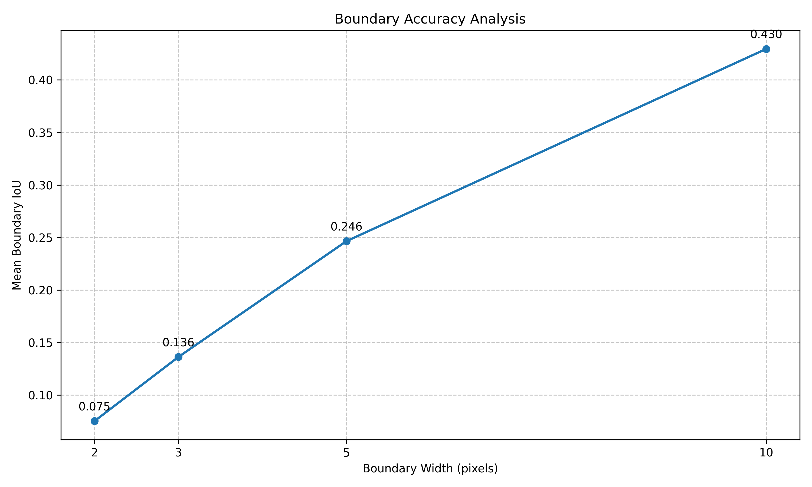
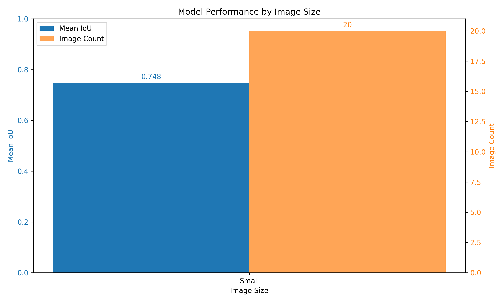

- Dataset: corrosion_test
- Number of images: 20
- Classes: Background, Fair, Poor, Severe
Standard Metrics
- mIoU: 66.3005
- fwIoU: 87.8386
Per-Class IoU
- Background: 93.9069
- Fair: 74.4863
- Poor: 63.9882
- Severe: 32.8206
F1 Scores
- Background: F1=0.9686 (P=0.9608, R=0.9765)
- Fair: F1=0.8538 (P=0.8985, R=0.8133)
- Poor: F1=0.7804 (P=0.7128, R=0.8622)
- Severe: F1=0.4942 (P=0.9296, R=0.3366)
- Macro Average: F1=0.7742 (P=0.8754, R=0.7472)
Boundary Accuracy Analysis
Analysis of segmentation performance near boundaries:
Boundary Width: 1px
- Mean IoU: nan
- Per-class boundary IoU: ### Boundary Width: 2px
- Mean IoU: 0.0752
- Per-class boundary IoU:
- Background: 0.0897
- Fair: 0.0808
- Poor: 0.0771
- Severe: 0.0533 ### Boundary Width: 3px
- Mean IoU: 0.1363
- Per-class boundary IoU:
- Background: 0.1632
- Fair: 0.1451
- Poor: 0.1370
- Severe: 0.0998 ### Boundary Width: 5px
- Mean IoU: 0.2465
- Per-class boundary IoU:
- Background: 0.2953
- Fair: 0.2612
- Poor: 0.2467
- Severe: 0.1828 ### Boundary Width: 10px
- Mean IoU: 0.4295
- Per-class boundary IoU:
- Background: 0.4967
- Fair: 0.4547
- Poor: 0.4294
- Severe: 0.3374

Boundary Analysis
Size Sensitivity Analysis
Analysis of performance on different image sizes:
- Small images (20): Mean IoU = 0.7483, Median IoU = 0.7883, Std =
0.1483

Size Sensitivity Analysis
- Model size: 407.73 MB
- Total parameters: 106,884,669
- Trainable parameters: 106,884,669
- Average inference time: 0.0342s
- Frames per second: 29.23 FPS
Error Analysis
The 10 worst performing images have been visualized in the
visualizations/worst_cases/ directory to help identify
common failure patterns.
Training History
 Training History
Training History
Visualizations
See the visualizations directory for prediction
examples.
Plots
- Confusion matrix:
plots/confusion_matrix_counts.png and
plots/confusion_matrix_normalized.png
- F1 scores:
plots/f1_scores.png
- Per-image IoU:
plots/per_image_iou.png
- Training history:
plots/training_history.png